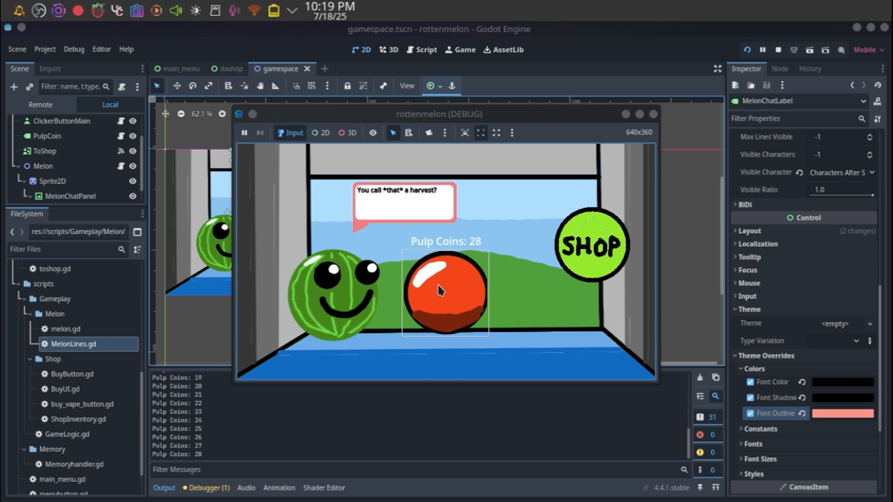
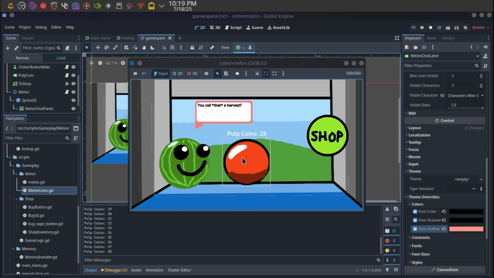

- Preparing for vertical slice demo release, tutorial and accessibilty updates pushed out, as well as a pause menu and mute toggle.
Welcome to the Melon Dev Blog

Keep Up to Date With the Latest Melon Updates!
Early Builds and Development

 

Want to Stay Up to date with the Melon?
MLDA Changelog
Last updated:
- Redesigned game visuals, experimented with gaussian techniques, and general polish updates.
- Implemented JSON branch cache and fixed signal mismatch.
- Created JSON debug restore point.
- Re-adjusted JSON values for scalability: separated
BaseCostandUpgradeCost.
- Buybutton reload instance implemented.
- Added progressive branching with adaptive branching based on key.
- Added branch grouping and refactored codebase to support upgradable branches.
- Created Dev Blog.
- New point for transfer.
- Refactor: moved from dedicated phone-upgrade scene to dedicated scene.
- Added
ConStoreand test assets.
- Phone UX and wiring to Shop State Manager.
- Resolved VScroll error (snapshot).
- Implemented phone UI and upgrade tree functionality.
- Fixed JSON bug and reimplemented dopamine bar.
- Framework for JSON compatibility; scaffolding for single…
- Additional JSON structuring; fixing effects pull on JSON…
- Wired JSON effects; assessing UI visibility.
- Added Rewards Manager and shop XP requirement.
- General functionality; fixed dopamine math bug; other fixes.
- Fixed visual bug via Z-index.
- Dopamine bar fully working.
- Added functional XP bar.
- Added global audio singleton and patched recursion bug.
- Implemented auto-click effect and click-scaling effect…
- Added
GameSystemsand rerouted global Audio Manager. - Created dynamic states for buyables; refactored game logic for scaling…
- Added labels to buyables shop.
- Linked dopamine bar logic; fixed extra progress bug…
- Added dopamine bar, added decay & grow multiplier for dopamine…
- Added click sound, milestone sound, and milestone tracker…
- Added store chime; set audio scene singleton to persist…
- Initial commit.
- Update README.md.
- Initial commit for melon game (force push).
- Added persistent states, added shop, added main menu, removed dedicated…
- Fixed bugs that inherited all buttons; added shop log inventory…
- Added melon dialogue functionality; added chat bubble placeholder…